MONAHAN est une pièce sonore pour oreilles curieuses. Commandée par la Ville d'Ottawa pour
les milieux humides de Monahan, sur le territoire traditionnel non cédé de la Nation algonquine anishinaabe,
elle s'écoute en scannant un code QR installé sur des panneaux disposés le long des sentiers. Conçue par
l'artiste Laura Taler, avec plus de 30 collaborateur·rice·s, c'est une œuvre sonore publique générative
que l'on écoute sur son téléphone, en marchant.
J'en étais la technologue créative : j'ai conçu et programmé le système génératif. À chaque écoute,
l'algorithme de MONAHAN compose une pièce unique d'environ 20 minutes à partir de 173 chapitres
sonores. On peut y revenir sans cesse : on entend parfois un chapitre déjà connu, mais cette fois à
côté d'un autre, nouveau.
MONAHAN a reçu deux prix. En 2024, le
Prix Legacy d'art public
du Creative City Network of Canada. Puis, au Third Coast International Audio Festival (2024-2025), elle a
remporté la catégorie
Audio Unbound,
choisie parmi 462 œuvres de plus de 50 pays et 30 langues.
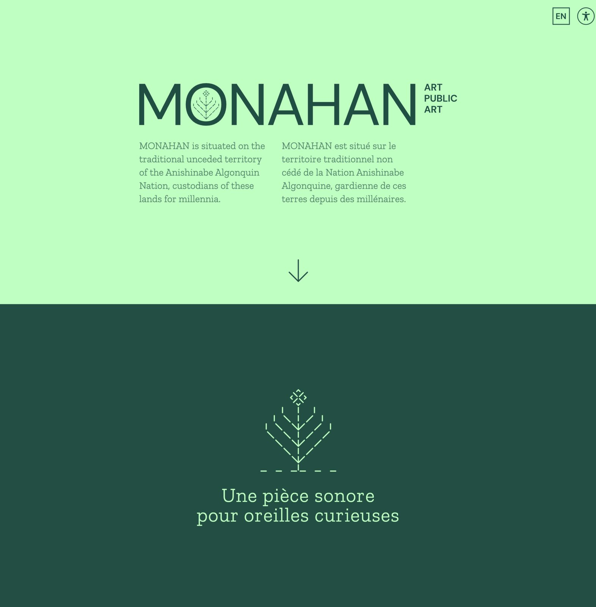
Ce que vous entendez
Les 173 chapitres viennent d'une trentaine de personnes. On y entend des chansons en turc, en
macédonien, en anglais, en arabe, en grec, en français et en algonquin. Des poèmes sur la contestation, la
traduction, la migration, le monde naturel et la sagesse. Des histoires de batailles de rap entre chenilles,
de conversations avec les arbres, d'écoute profonde, de la danse frétillante des abeilles et des oreilles
des papillons. Des oiseaux qui chantent, des insectes qui appellent, des loutres qui plongent, des chiens
qui jappent. Des herbes qui bruissent, de la neige glacée qui craque, de l'eau qui clapote, des branches
qui grincent.
Un poème. Un chapitre de MONAHAN.
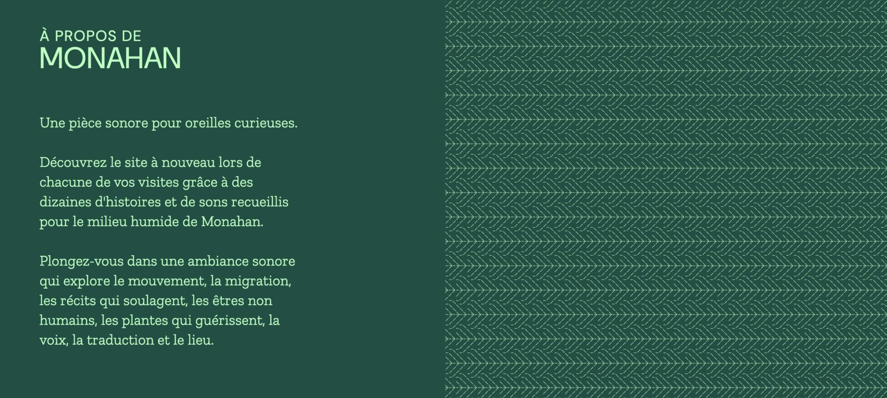
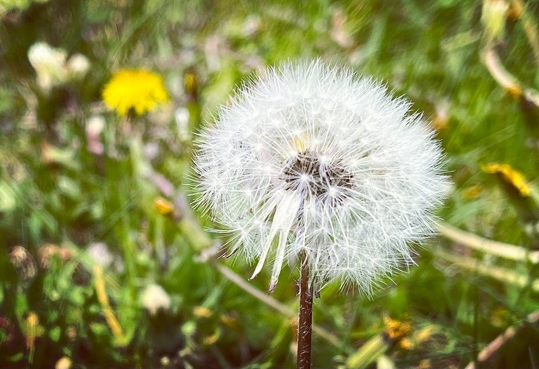
Détail du marais. Photo : Laura Taler
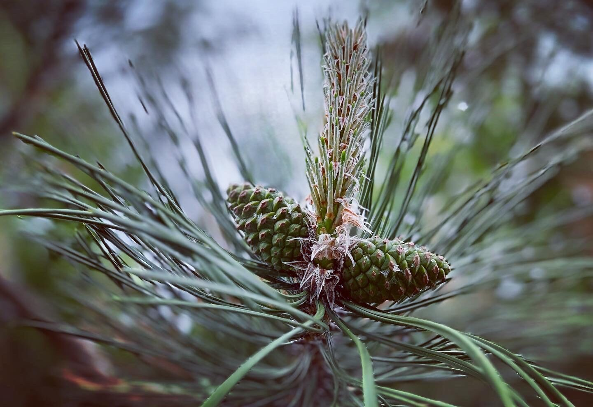
Détail du marais. Photo : Laura Taler
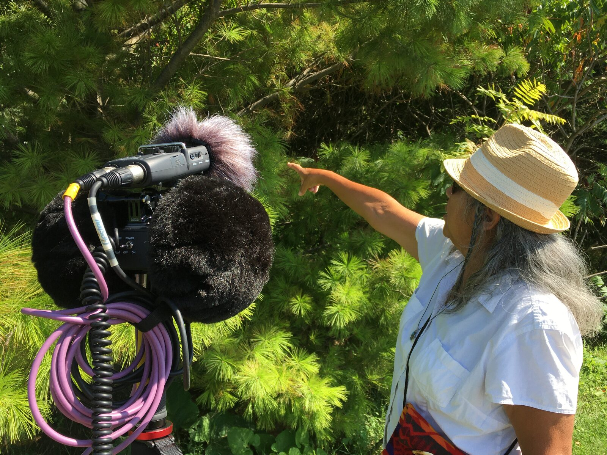
Louella Tobias, en entrevue au marais. Photo : Laura Taler
Écoutez
MONAHAN se décrit mal. Elle s'écoute. Voici un fragment du marais, tel qu'on l'entend sur le sentier.
Oiseaux du marais. Un chapitre de MONAHAN.
Comment ça fonctionne
On arrive au parc, on scanne un code QR sur un panneau, et une pièce sonore personnelle se met à se composer
pour nous, en direct, pendant qu'on marche. L'œuvre a été pensée pour ce lieu précis, mais on peut l'écouter
n'importe où, idéalement dehors. Voici un peu de la musique qu'on y croise.
De la musique, jouée par Demetri. Un chapitre de MONAHAN.
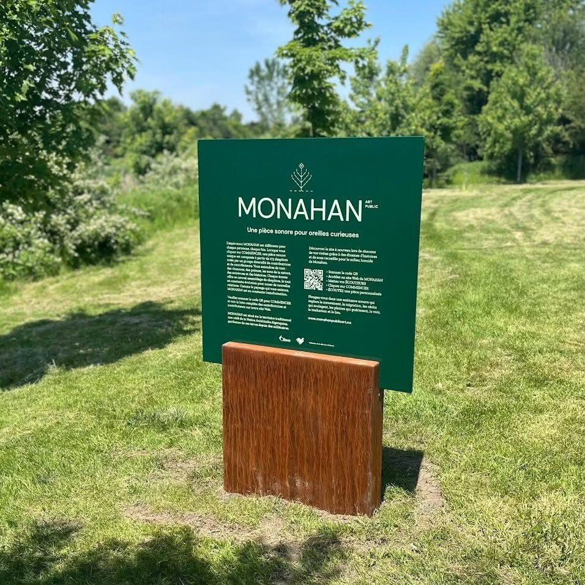
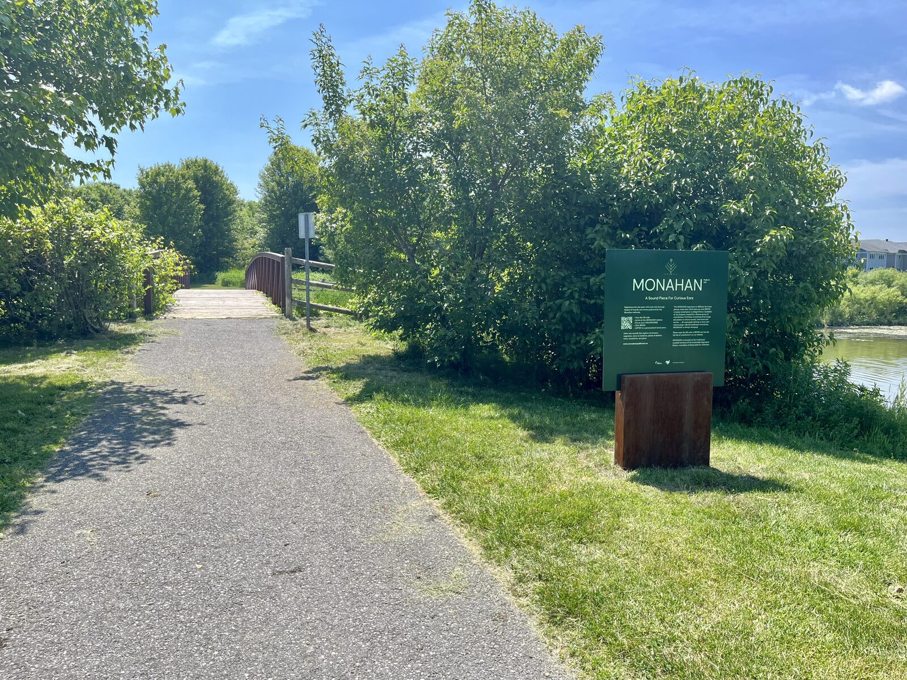
Photo : Laura Taler
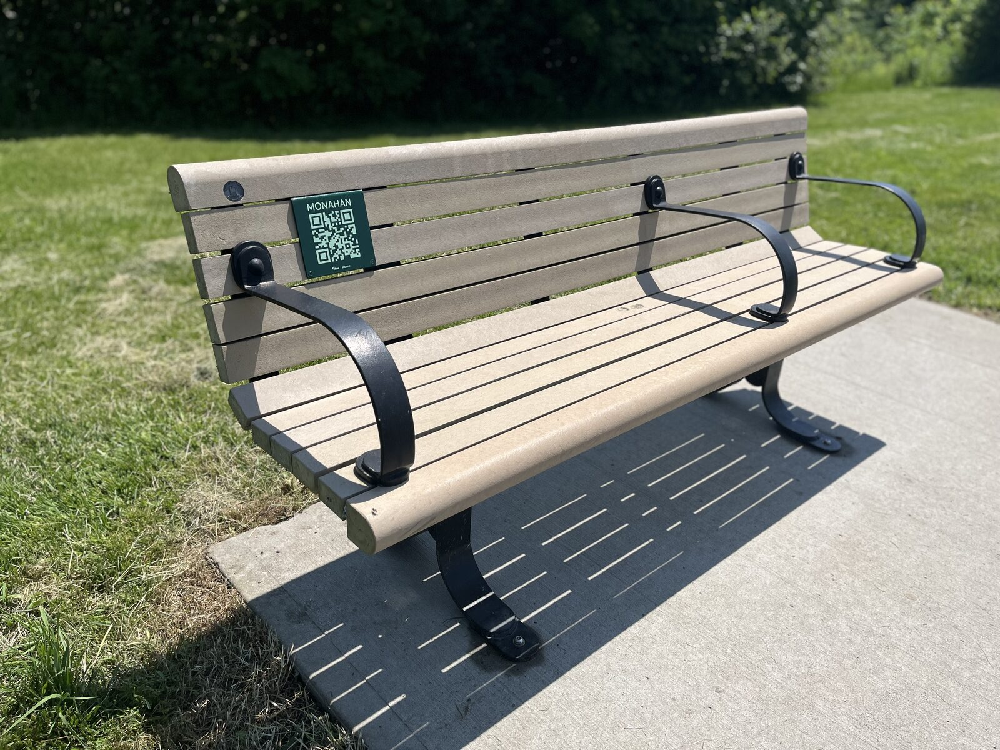
Les codes QR se trouvent aussi sur des bancs. Photo : Laura Taler
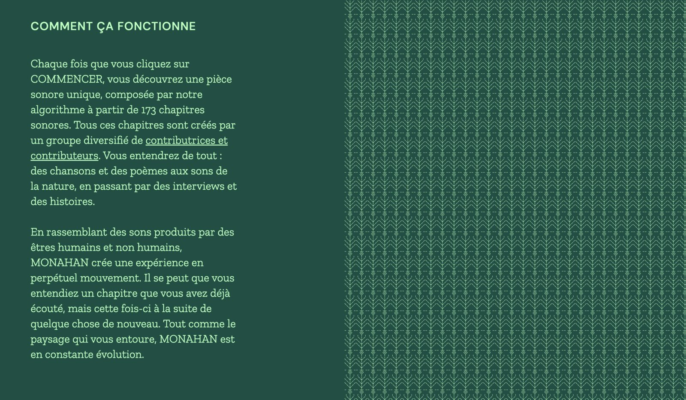
Faire chanter l'algorithme
Composer une pièce de 20 minutes à la volée, qui tienne debout musicalement et émotionnellement à
chaque fois, demande plus qu'un bouton « aléatoire ». J'ai écrit un système de règles qui choisit les
chapitres, les enchaîne et les fait respirer : ce qui peut suivre quoi, quand laisser le silence,
comment passer d'un poème à des grenouilles sans que ça accroche. Jordy, ingénieur du son chez Affinity, a
passé plus de 60 heures à mixer les 173 chapitres pour que tout se fonde.
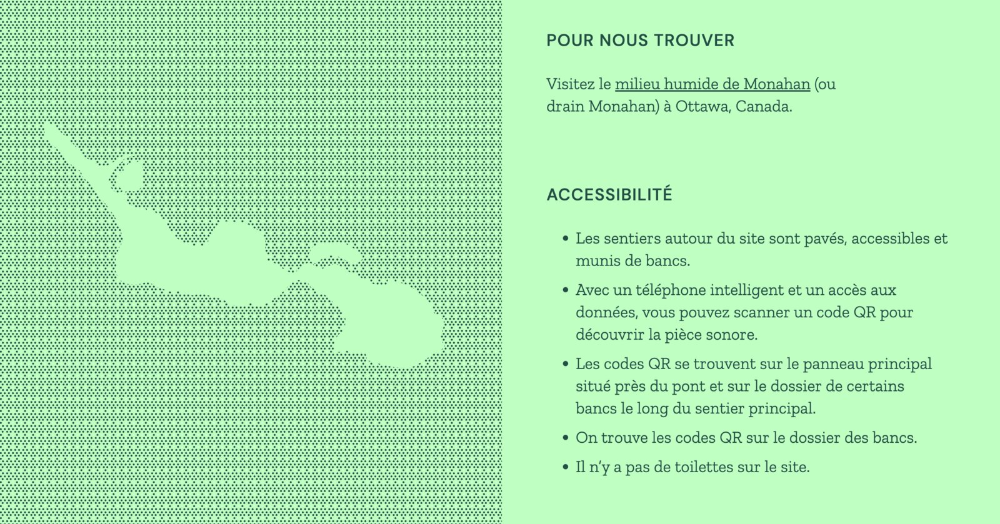
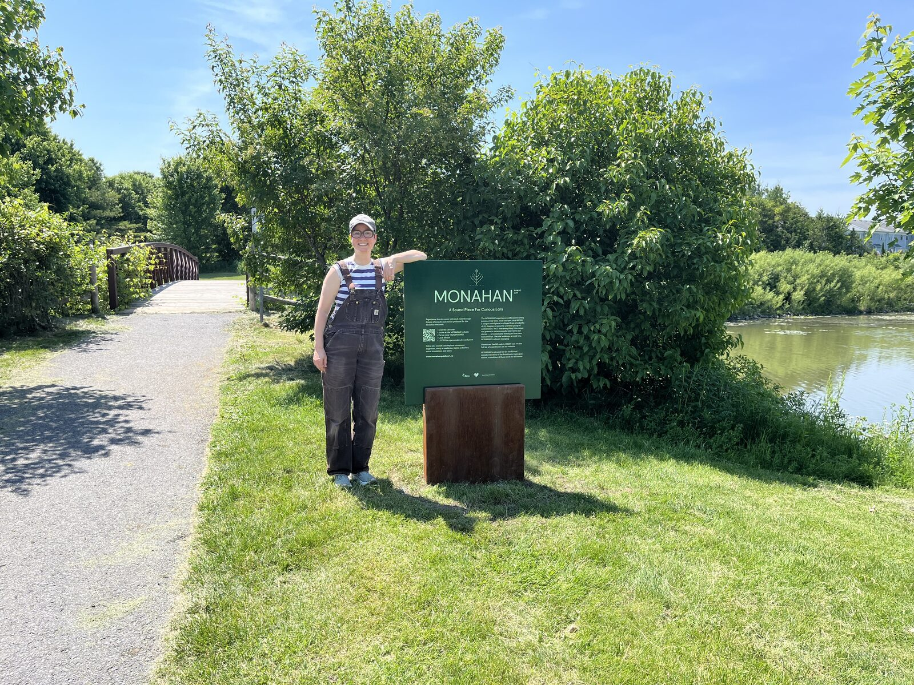
Laura Taler, au panneau principal. Photo : Mike Surowiec
Conception et réalisation : Laura Taler. Technologie créative et système génératif : Marie LeBlanc
Flanagan. Mixage : Jordy (Affinity). Avec plus de 30 collaborateur·rice·s. Commande de la Ville
d'Ottawa pour les milieux humides de Monahan, sur le territoire traditionnel non cédé de la Nation
algonquine anishinaabe. La liste complète des contributions et de l'équipe se trouve sur
monahanpublicart.ca.
MONAHAN is a sound piece for curious ears. Commissioned by the City of Ottawa for the
Monahan wetlands, on the traditional unceded territory of the Anishinaabe Algonquin Nation, it is heard by
scanning a QR code on signposts placed along the pathways. Conceived of by the artist Laura Taler, with more
than 30 contributors, it is a generative public sound artwork you listen to on your phone as you walk.
I was the creative technologist: I designed and programmed the generative system. Each time you listen,
MONAHAN's algorithm composes a unique piece, about 20 minutes long, from 173 sound chapters. You
can return again and again. You might hear a chapter you've heard before, but this time next to something
new.
MONAHAN has won two awards. In 2024, the
Public Art Legacy Award
from the Creative City Network of Canada. And at the Third Coast International Audio Festival (2024-2025), it
won the
Audio Unbound
category, chosen from 462 entries across more than 50 countries and 30 languages.
What you hear
The 173 chapters come from more than thirty people. There are songs in Turkish, Macedonian, English,
Arabic, Greek, French, and Algonquin. Poems about protest, translation, migration, the natural world, and
wisdom. Stories about caterpillar rap battles, talking with trees, deep listening, the bee's waggle dance,
and butterfly ears. Birds singing, insects calling, otters splashing, dogs barking. Grasses swooshing, icy
snow crunching, water swishing, branches creaking.
A poem. A chapter from MONAHAN.A wetland detail. Photo: Laura TalerA wetland detail. Photo: Laura TalerLouella Tobias, interviewed at the wetlands. Photo: Laura Taler
Listen
MONAHAN is hard to describe. It is easy to hear. Here is a fragment of the marsh, as you hear it on the path.
Marsh birds. A chapter from MONAHAN.
How it works
You arrive at the park, scan a QR code on a signpost, and a personal sound piece begins composing itself for
you, live, as you walk. The work was made for this specific site, but you can listen anywhere, ideally
outside. Here is some of the music you'll come across in it.
Music, played by Demetri. A chapter from MONAHAN.Photo: Laura TalerQR codes are also on benches along the path. Photo: Laura Taler
Making the algorithm sing
Composing a 20 minute piece on the fly, one that holds together musically and emotionally every time,
takes more than a shuffle button. I wrote a system of rules that chooses the chapters, sequences them, and
lets them breathe: what can follow what, when to leave silence, how to move from a poem to frogs without a
jolt. Jordy, Affinity's audio engineer, spent more than 60 hours mixing the 173 chapters so it all
blends.
Laura Taler at the main sign. Photo: Mike Surowiec
Conceived and realized by Laura Taler. Creative technology and generative system: Marie LeBlanc Flanagan.
Mixing: Jordy (Affinity). With more than 30 contributors. Commissioned by the City of Ottawa for the
Monahan wetlands, on the traditional unceded territory of the Anishinaabe Algonquin Nation. The full list of
contributors and the production team is at
monahanpublicart.ca.